两个事物如果能够按照某种关系产生联系，就产生了对应关系。这种关系是很宽泛的，可以是直接的对应关系，如两个相同的事物、动物跟相应的食物等；也可以是间接的对应关系，如绳子相连的两个事物等。
对应关系的题属于感知集合的范畴，能够很好地促进孩子感知集合的发展，能够促进孩子观察能力的发展，能够提高孩子敏锐地发现事物的特征的能力。
对应关系题的类型很多，我们这里介绍几种常见的类型，如相同事物的关系、物体与影子的关系、鞋与鞋印的关系、通过绳子相连的事物的关系等。
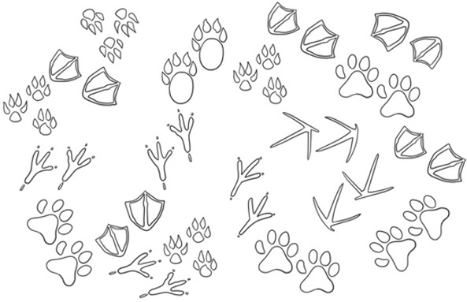
典型例题 1 在一个盗窃案的现场，警察提取了一些鞋印，这些鞋印里面可能有犯罪嫌疑人的鞋印。如果每个人都穿不同的鞋子，你知道有多少人来过现场吗？
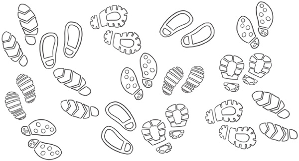
本题通过建立鞋印与人的对应关系，来区分相同与不同的鞋印，有多少种不同的鞋印，现场就来了多少人。从下图中可以看出，现场有以下6种鞋印，所以有6个人来过现场。
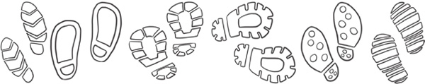
典型例题 2 把各个动物和它们对应的影子连起来吧。
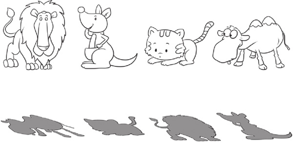
本题通过影子和动物建立对应关系。因为不同动物的影子是不一样的，影子与动物的外形轮廓是相吻合的，所以孩子在解决本题时，要仔细地观察动物的轮廓特征和影子。解决影子问题，孩子还需要了解光线的常识，就是什么样的地方光线能够穿过去，什么样的地方光线不能够穿过去。本题只要抓住动物的轮廓特征就能很容易地找到对应的影子。
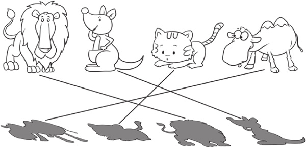
典型例题 3 有8只动物参加森林运动会，牵着同一条绳子的2只动物组成一组，你能找出来谁跟谁一组吗？
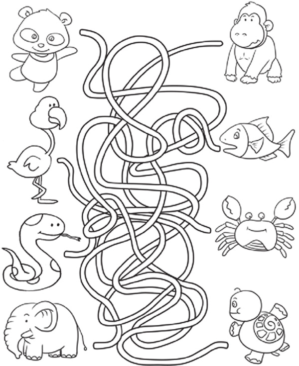
在本题中，绳子使2只动物产生了对应关系，正确的解法就是先确定某根绳子一头的动物，沿着绳子走到绳子的另一头，这样就能找到绳子另一头的动物，并建立对应关系。
根据图中绳子的关系，各动物的对应关系如下。
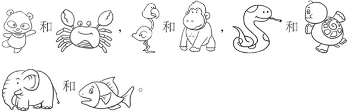
典型例题 4 仔细观察，下面的2幅图中有几处不一样的地方，请指出来。
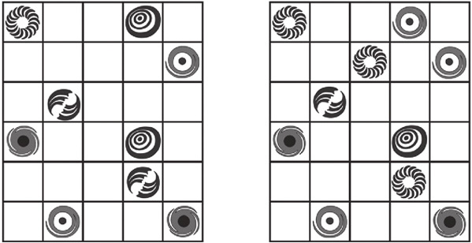
整体看上去很难发现2幅图中有哪些地方是不一样的，这个时候我们要养成有序观察的习惯。我们可以从左到右，从左起第1列开始比较2幅图，对于第1列，我们又可以从上往下对每个元素进行比较。这样的一个比较过程实际上是建立2幅图之间的位置对应关系，通过有序的对比，很容易找出2幅图的不同之处。
经过对比，发现2幅图中第3列第2行、第4列第1行、第4列第5行对应的图形不一样。
1.昨天晚上下了一场大雪，但是还是有很多动物早早地起来在雪地上锻炼身体，你知道有几种动物起来锻炼身体了吗？
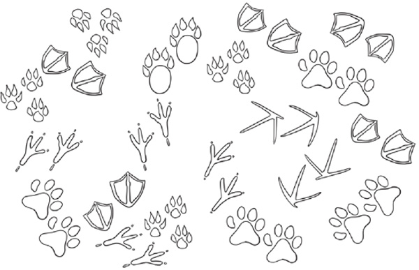
2.你能找到下面2只兔子正确的影子吗？
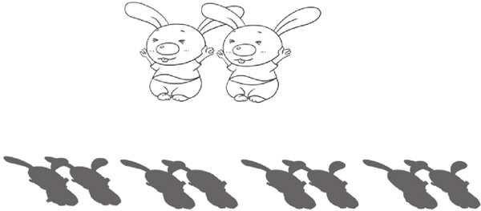
3.你能把手型和对应的手影连起来吗？
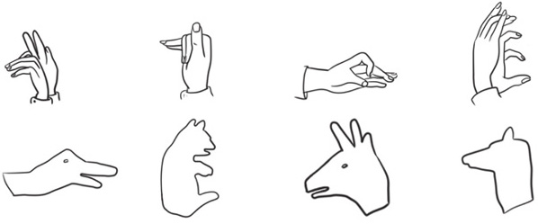
4.请正确找出每根钓鱼竿钓到的鱼。
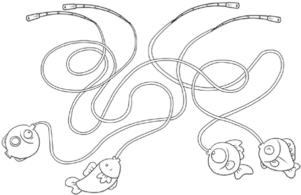
5.请正确找出每个吊牌连着的棒棒糖。
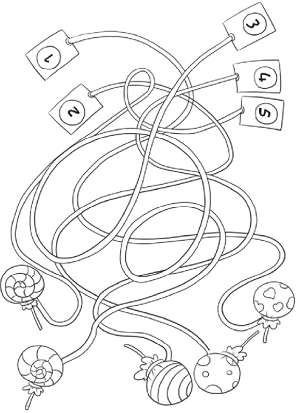
6.仔细观察，下面的2幅图中有几处不一样的地方，请指出来。
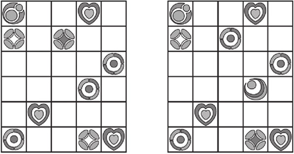
7.你能帮助每个动物找到自己的家吗？
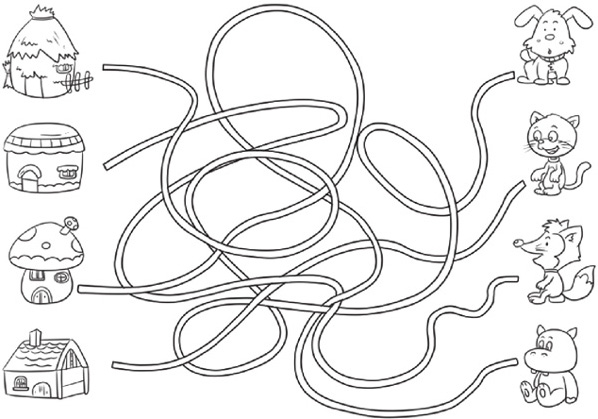
8.你能找出与下图中圆圈中坦克相同的坦克吗？一共有几辆呢？
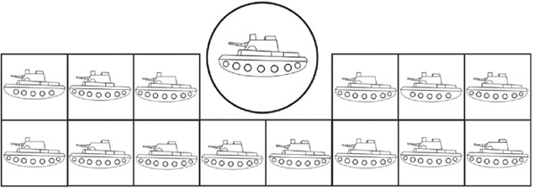